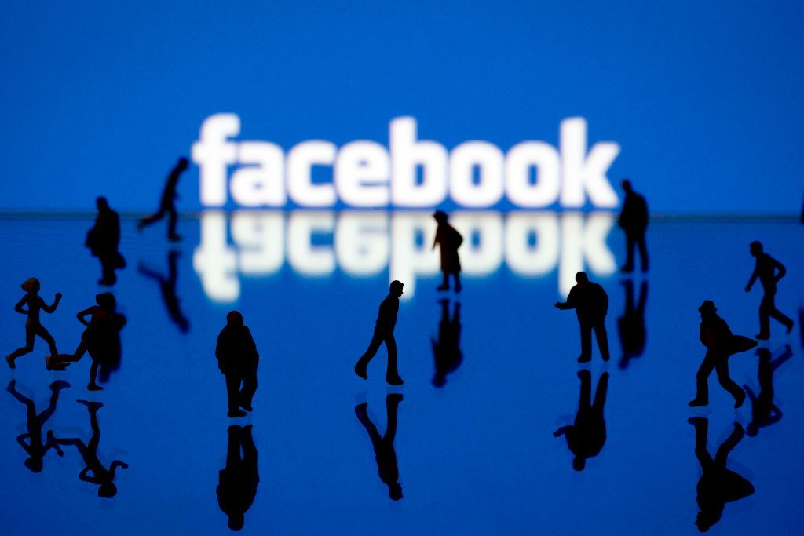

Avoir une application mobile permet de proposer de nouveaux outils d'interaction à la clientèle : chat en ligne, service de rappels, et bien d'autres encore. C'est un excellent moyen pour se faire connaitre sur davantage de plateformes, et simplifier la communication entreprise-clients.